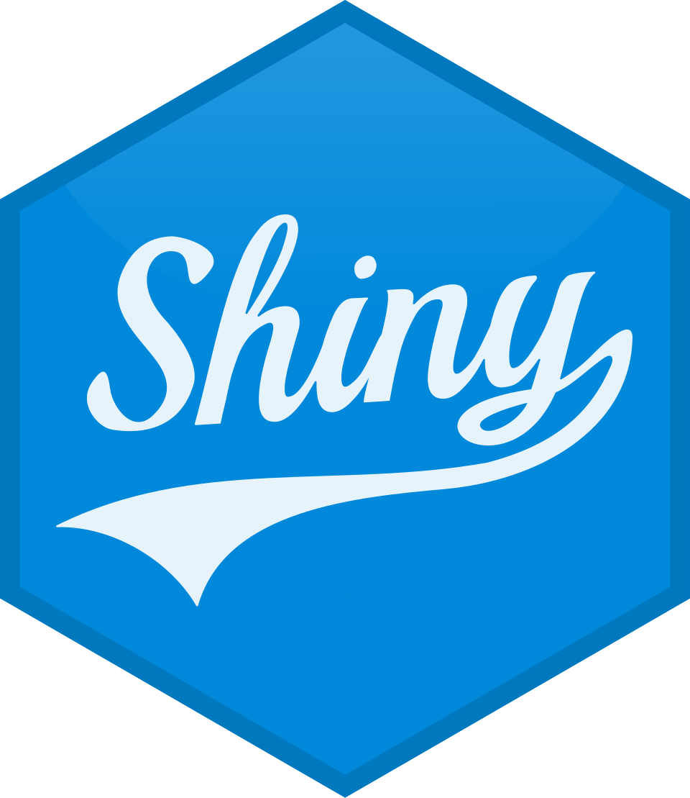

Projects
Selected projects in policy analysis and political risk. The projects use data and computational methods to produce insights.
Dashboard: APEC Projects
Interactive dataset and dashboard developed to address limitations in access, comparability and analysis of APEC projects data.
- Builds a structured dataset of APEC projects using Python and R for data extraction, processing and visualization.
- Organizes project information to enable filtering by year, economy, forum, topic, funding source, among others.
- Supports analysis of project distribution, funding patterns and activity trends across APEC.
The dashboard allows for the analysis of APEC project activity and funding patterns.
 Code
Code